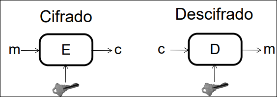
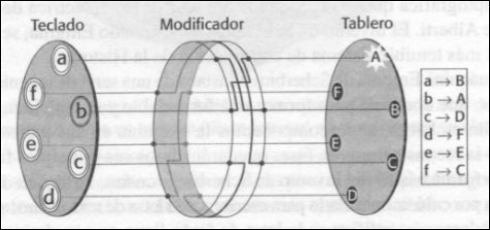
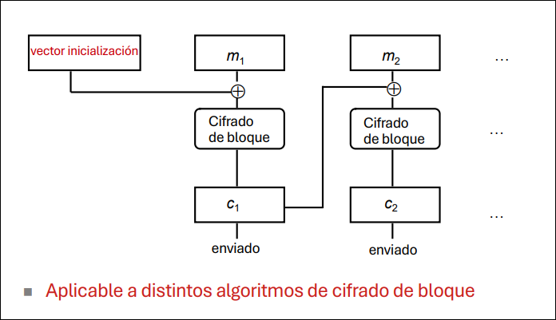
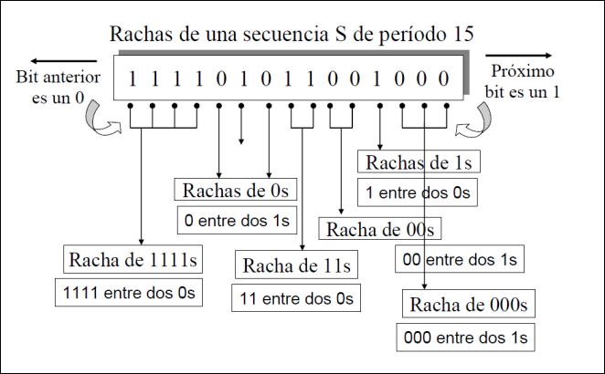
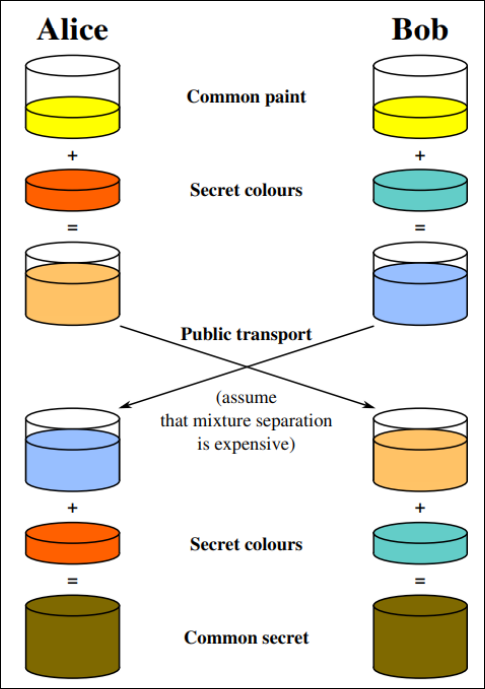
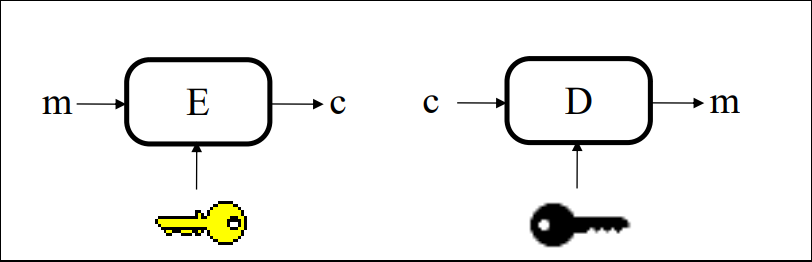
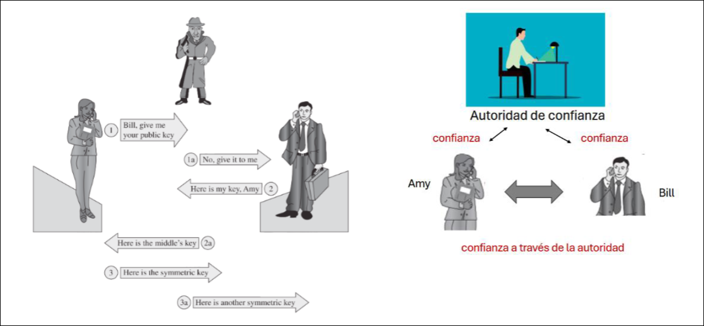
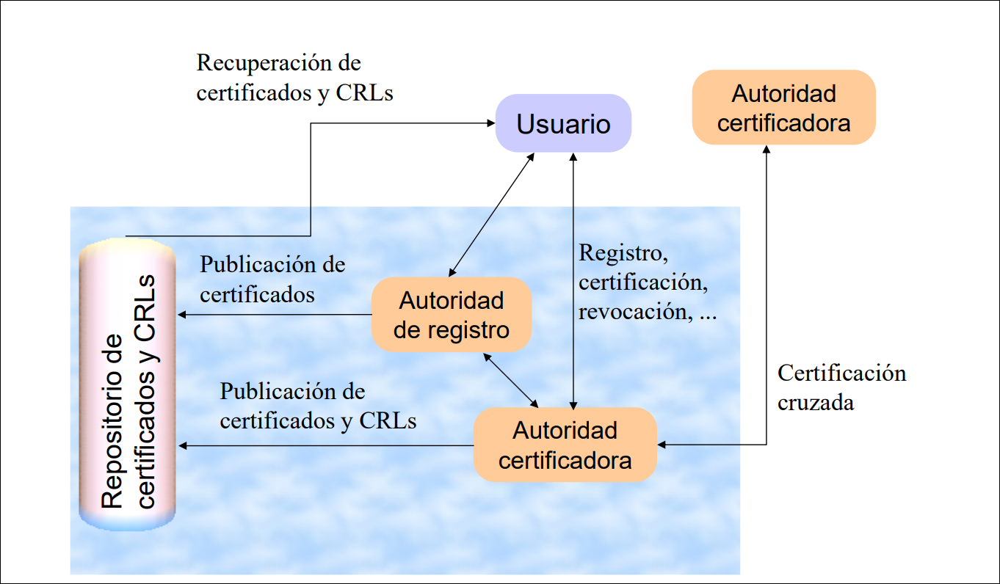

CIBER · curso 3
2. Criptografía
2.1 Criptografía simétrica
2.1.1 Idea general y conceptos básicos
La criptografía busca ocultar el significado de un mensaje para que solo su destinatario pueda interpretarlo. En un criptosistema intervienen el mensaje en claro
En un cifrado simétrico la misma clave sirve para cifrar y descifrar:

En la criptografía clásica dominaron dos ideas. La transposición reordena las letras de un mensaje; un ejemplo histórico es la escítala espartana. La sustitución cambia cada letra por otra; el ejemplo más conocido es el cifrado César, que desplaza cada letra
Conviene separar algunos términos:
- Criptología: criptografía + criptoanálisis.
- Criptografía: arte y ciencia de mantener mensajes seguros.
- Criptoanálisis: arte y ciencia de romper esos mensajes.
- Criptosistema: conjunto de algoritmos, claves y protocolo de uso.
- Clave: parámetro que inicializa y personaliza el algoritmo.
2.1.2 Criptoanálisis
El criptoanálisis intenta romper un cifrado o, al menos, extraer información útil. Sus objetivos típicos son descifrar un mensaje concreto, reconocer patrones, inferir significado por el tamaño o la frecuencia de los mensajes, deducir la clave o encontrar debilidades en el algoritmo, la implementación o el entorno de uso.
Se suele asumir que el atacante conoce el algoritmo, pero no la clave. Los modelos clásicos de ataque son:
- Solo texto cifrado: el atacante solo ve textos cifrados.
- Texto plano conocido: conoce pares de texto claro y texto cifrado.
- Texto plano elegido: puede elegir mensajes y obtener su cifrado.
Los ataques pueden ser matemáticos, si explotan propiedades del algoritmo, o estadísticos, si buscan correlaciones en letras, pares de letras, tripletas o mensajes cifrados de forma similar. Cuando el espacio de claves es pequeño, también es viable la fuerza bruta. El cifrado César, por ejemplo, solo tiene 27 claves posibles.
2.1.3 Cifrados clásicos
La sustitución monoalfabética genérica construye un alfabeto cifrado colocando al azar las letras del alfabeto llano. Eso da lugar a
El cifrado de Vigenère mejora a César usando una clave de varias letras, es decir, varias sustituciones de César encadenadas. Históricamente se rompió en dos fases:
- Se estudian las repeticiones de secuencias para estimar la longitud de la clave.
- Se divide el texto en bloques y cada bloque se ataca como una sustitución monoalfabética.
Enigma, diseñada por Arthur Scherbius en 1920, mecanizó este planteamiento. Empezó como una sustitución monoalfabética, pero al girar tras cada letra pasó a comportarse como un cifrado polialfabético. Con 3 rotores encadenados se obtenían

El cuaderno de uso único (one-time pad) lleva la idea al límite: es un Vigenère con una clave aleatoria, tan larga como el mensaje y no reutilizada. En esas condiciones se considera probablemente irrompible. Su debilidad práctica no está en el algoritmo, sino en la generación y distribución de la clave. Si la clave se genera con un pseudoaleatorio débil, el sistema deja de ser seguro.
2.1.4 Primitivas y criterios de diseño
Los cifrados modernos combinan unas pocas primitivas básicas:
- Sustitución: reemplazar un conjunto de bits por otro.
- Transposición: cambiar el orden de los bits.
- Confusión: hacer compleja la relación entre texto claro, clave y texto cifrado.
- Difusión: repartir la información del texto claro por todo el texto cifrado.
Estas técnicas se emplean para proteger la confidencialidad, es decir, para que solo quien conoce la clave pueda acceder al contenido.
Un criptosistema solo merece confianza si cumple tres condiciones: está basado en matemáticas sólidas, ha sido analizado públicamente por expertos y ha resistido la prueba del tiempo.
2.1.5 Cifradores de bloque
Un cifrador de bloque divide el mensaje en bloques de
DES y su evolución
DES trabaja con bloques de 64 bits y una clave total de 64 bits, de los que 56 bits son efectivos y 8 bits se usan para paridad. El cifrado se realiza en 16 iteraciones y combina sustitución y permutación; en términos de Shannon, la sustitución aporta sobre todo confusión y la permutación aporta difusión.
Con
Las variantes más citadas fueron:
| Variante | Idea | Observación |
|---|---|---|
| DES | Una clave de 56 bits | Hoy es insuficiente. |
| Doble DES | Cifrar dos veces con dos claves | No ofrece la mejora que intuitivamente se esperaría. |
| Triple DES de dos claves | Esquema EDE con dos claves de 56 bits | Fuerza aproximada de unos 80 bits. |
| Triple DES de tres claves | Esquema EDE con tres claves de 56 bits | Fuerza aproximada de unos 112 bits. |
La sustitución de DES fue gradual. El NIST abrió en enero de 1997 el proceso para elegir un reemplazo, preseleccionó 15 algoritmos en agosto de 1998, dejó 5 finalistas en abril de 1999 (MARS, RC6, Rijndael, Serpent y Twofish) y eligió Rijndael como AES en octubre de 2000.
AES y modos de uso
AES es el estándar actual de cifrado simétrico por bloques. Trabaja con bloques de 128 bits y admite claves de 128, 192 o 256 bits, con 10, 12 o 14 rondas respectivamente. Cada ronda combina operaciones como SubBytes, ShiftRows, MixColumns y AddRoundKey.
El algoritmo por sí solo no basta: importa mucho el modo de uso.
ECB (Electronic Code Book) cifra cada bloque de forma independiente. Es sencillo, pero tiene dos problemas graves: las repeticiones del texto claro se reflejan en el texto cifrado y, si un atacante reconoce bloques, puede intentar recombinarlos para fabricar mensajes válidos.
CBC (Cipher Block Chaining) evita eso encadenando los bloques. Antes de cifrar cada bloque, se hace un XOR con el bloque cifrado anterior. El primer bloque necesita un vector de inicialización (IV).

CTR usa un contador y un valor inicial aleatorio para convertir un cifrador de bloque en un esquema de tipo flujo. Su ventaja principal es la paralelización.
GCM añade además autenticación. El NIST lo recomienda para cifrado autenticado y, combinado con AES, aparece en protocolos como TLS. En esencia, AES se aplica sobre el IV/contador y el resultado se combina con el texto claro; además se calcula una etiqueta de autenticación. Aun así, un mal uso del IV/nonce puede introducir vulnerabilidades graves.
2.1.6 Cifradores de flujo
Un cifrador de flujo procesa el mensaje bit a bit o byte a byte. Su funcionamiento básico es:
- A partir de una semilla se genera una secuencia pseudoaleatoria del mismo tamaño que el mensaje.
- Esa secuencia se combina con el texto claro, normalmente mediante XOR.
- Emisor y receptor comparten la semilla para poder reproducir la misma secuencia.

Para que la secuencia cifrante sea segura debe tener un período al menos tan largo como el mensaje y una distribución de bits y de rachas compatible con una secuencia pseudoaleatoria. En la práctica, semillas de entre 120 y 250 bits permiten obtener períodos enormes.
La propuesta clásica es el cifrador de Vernam (1917): se parte de una secuencia binaria aleatoria
Un generador pseudoaleatorio sencillo puede implementarse con un registro de desplazamiento: el registro empieza cargado con la clave, se desplaza un bit en cada iteración, se toma un bit como salida y se calcula el nuevo bit con una función
Dos algoritmos históricos ilustran bien los problemas prácticos:
- RC4 usa claves de longitud variable. Fue propietario hasta que se filtró en septiembre de 1994, llegó a emplearse en SSL, WEP y WPA y era unas diez veces más rápido que DES. Sus debilidades de implementación acabaron permitiendo ataques reales.
- A5, propuesto en 1994 y no publicado en su diseño original, se usó en el cifrado del enlace GSM. Sus debilidades mostraron una lección clásica: en criptografía, ocultar el algoritmo en lugar de someterlo a revisión pública suele acabar mal.
2.1.7 Limitaciones de la criptografía simétrica
El gran problema es la distribución de claves. Si hay
claves compartidas, además de un canal seguro para repartirlas. A eso se suma el riesgo de fuerza bruta, que obliga a usar claves suficientemente largas y a renovarlas con cierta frecuencia.
2.2 Criptografía de clave pública
2.2.1 Intercambio de claves: Diffie-Hellman
La criptografía de clave pública nace, en buena parte, para aliviar el problema de distribución de claves. Diffie-Hellman (1976) permite que dos partes acuerden una clave simétrica común sobre un canal inseguro. Se apoya en la dificultad del logaritmo discreto: dado un primo grande
El intercambio clásico funciona así:
- Alice y Bob acuerdan públicamente
y . Ejemplo: y . - Alice elige un secreto
y envía . - Bob elige un secreto
y envía . - Alice calcula
. - Bob calcula
.
Ambos obtienen la misma clave

Por sí solo, Diffie-Hellman no autentica a las partes, así que es vulnerable a ataques man-in-the-middle. Por eso necesita mecanismos adicionales de autenticación. Se ha usado en SSL/TLS, SSH, Secure FTP e IPsec.
2.2.2 Idea de la clave pública
En criptografía de clave pública cada usuario tiene dos claves:
- una clave privada
, que solo conoce su propietario; - una clave pública
, que puede conocer cualquiera.
Ambas son inversas en cierto sentido: lo que una hace, la otra lo deshace.

Su funcionamiento básico para confidencialidad es:
Un sistema de clave pública debe permitir cifrar y descifrar con facilidad usando la clave correcta, pero hacer computacionalmente inviable recuperar la clave privada a partir de la pública o romper el sistema mediante ataques de texto claro elegido.
En cuanto a servicios de seguridad, la idea general es simple: la clave pública sirve para proteger la confidencialidad y la clave privada sirve para demostrar autoría. En la práctica, esto último se implementa con firmas digitales sobre un resumen, no cifrando el mensaje completo con la clave privada.
2.2.3 RSA
RSA se basa en la dificultad de factorizar números grandes y de calcular ciertas raíces discretas módulo un número grande. Dos números son primos relativos si no comparten factores. La función
La generación de claves se resume así:
- Se eligen dos primos grandes
y . - Se calcula
y . - Se elige
tal que . - Se calcula
de forma que .
La clave pública es
RSA tiene varias ventajas frente al cifrado simétrico puro: no necesita un canal seguro para repartir claves y basta con un par de claves por usuario. Sus pegas también son claras: necesita claves grandes (al menos 2048 bits), es más lento que el cifrado simétrico, tiene límites prácticos sobre el tamaño del mensaje y depende de una infraestructura de confianza para asociar identidades y claves públicas.
Desde el punto de vista de seguridad, RSA puede soportar confidencialidad, autenticación, integridad y no repudio. Para evitar ataques estadísticos o manipulaciones obvias, el mensaje no debe tratarse como texto crudo: se trabaja en bloques grandes y con padding adecuado. Aun así, no se usa para cifrar grandes volúmenes de datos: en la práctica se emplea sobre todo en esquemas híbridos y para encapsular claves.
2.2.4 Criptografía híbrida
La criptografía híbrida combina lo mejor de ambos mundos: la criptografía de clave pública se usa para autenticar y para intercambiar una clave de sesión simétrica, y la criptografía simétrica se usa después para cifrar los datos, mucho más rápido.
En TLS, por ejemplo, pueden aparecer certificados RSA para autenticación, mecanismos Diffie-Hellman o ECDHE para acordar la clave de sesión y algoritmos simétricos como AES-GCM para proteger el tráfico.
La comparación práctica entre opciones habituales es:
| Opción | Tamaño de clave equivalente | Impacto en rendimiento | Forward secrecy | Uso típico |
|---|---|---|---|---|
| RSA | 2048 bits | Alto | No | Sistemas heredados |
| DHE | 2048 bits | Moderado | Sí | Algunas aplicaciones |
| ECDHE | 256 bits ECC | Bajo | Sí | Opción habitual en TLS 1.3 |
2.2.5 Evolución: curvas elípticas y presión poscuántica
El crecimiento de la capacidad de cálculo y la posibilidad teórica de que una computación cuántica escalable ejecute el algoritmo de Shor presionan a sistemas como RSA o Diffie-Hellman. Una respuesta inmediata fue aumentar el tamaño de las claves RSA, pero eso empeora la eficiencia.
Las curvas elípticas ofrecen la misma seguridad con claves mucho más pequeñas: una clave de 256 bits ECC suele compararse con una clave RSA de 3072 bits. Eso reduce coste computacional y ancho de banda.
2.2.6 Intercambio de claves con curva elíptica
En ECDH dos partes acuerdan una clave compartida sobre una curva elíptica pública y un punto generador
Si Alice tiene clave privada
- Alice calcula su clave pública
. - Bob calcula su clave pública
. - Alice obtiene el secreto compartido como
. - Bob obtiene el mismo secreto como
.
Como
La seguridad depende de la dificultad del logaritmo discreto en curvas elípticas. Aun así, ECDH no cifra ni autentica por sí solo: necesita integrarse con otros mecanismos y conviene usar curvas estandarizadas y auditadas.
2.3 Funciones hash y firma digital
Las funciones hash o de resumen se usan para comprobar si un bloque de datos ha sido modificado. No ocultan el contenido como un cifrado: lo transforman en una huella corta y de longitud fija.
2.3.1 Funciones hash criptográficas
Una función hash criptográfica
- ser fácil de calcular para cualquier entrada;
- ser muy difícil de invertir;
- hacer muy difícil encontrar dos entradas distintas con el mismo resumen;
- producir un resumen corto y de longitud fija;
- comportarse como una función de una sola vía.
Sus usos más habituales son el chequeo de integridad, la autenticación, los protocolos de comunicación, la firma digital, algunos mecanismos de cifrado y el almacenamiento de contraseñas. En este último caso conviene añadir una sal: si dos usuarios tienen la misma contraseña y no se usa sal, acabarán teniendo el mismo hash.
Colisiones
Si
Con clave y sin clave
Los resúmenes pueden ser:
- Con clave: incorporan una clave compartida. El ejemplo clásico es un MAC; en estos apuntes se cita DES en modo de encadenamiento como aproximación histórica.
- Sin clave: no usan clave criptográfica. Aquí entran MD5, SHA-1, SHA-2 y SHA-3.
Las familias más importantes son:
| Familia | Bloques de entrada | Tamaño del resumen | Situación |
|---|---|---|---|
| MD5 | 512 bits | 128 bits | En desuso por debilidades. |
| SHA-1 | 512 bits | 160 bits | Ya no se considera seguro para varios usos desde 2017. |
| SHA-2 | 512 o 1024 bits | 224, 256, 384 o 512 bits | Familia más usada actualmente. |
| SHA-3 | Construcción distinta a SHA-2 | 224, 256, 384 o 512 bits | Alternativa moderna. |
En términos prácticos, los tamaños más recomendables dentro de estas familias suelen ser SHA-256, SHA-384, SHA-512, SHA3-256 y SHA3-512.
2.3.2 Firma digital
La firma digital no busca dar confidencialidad; su función real es garantizar autenticidad, integridad y no repudio. Se basa en criptografía de clave pública:
- El firmante calcula un resumen del documento.
- Firma ese resumen con su clave privada.
- Cualquier tercero usa la clave pública correspondiente para verificar la firma y comparar el resumen.
Una firma digital debe ser:
- infalsificable: nadie debería poder firmar sin la clave privada;
- auténtica: el receptor debe poder atribuirla al firmante correcto;
- no alterable: cualquier manipulación debe resultar evidente;
- no reutilizable: no debe poder trasplantarse a otro documento sin que se note.
Cuando la verificación es correcta, el receptor obtiene tres garantías: el remitente es quien dice ser (autenticación), el mensaje no cambió (integridad) y el remitente no puede negar razonablemente su intervención (no repudio).
2.4 Infraestructura de clave pública (PKI)
2.4.1 El problema de la confianza
En el mundo físico confiamos en documentos como el DNI o el pasaporte porque los emite una autoridad reconocida. En el mundo digital ocurre algo parecido: una firma con clave privada demuestra intervención técnica, pero sigue haciendo falta un mecanismo que diga de quién es realmente la clave pública asociada.
Ahí entran los certificados y las autoridades certificadoras.

2.4.2 Certificados digitales
Un certificado digital contiene los datos públicos de un usuario firmados por una CA (Certification Authority). Como mínimo incluye:
- la identidad del titular;
- su clave pública;
- la fecha de emisión y el período de validez;
- información adicional relevante.
Ejemplo clásico: Bill obtiene de Carlos el certificado de Amy. Si Bill ya conoce la clave pública de Carlos, puede verificar la firma de Carlos y, por tanto, confiar en que la clave pública incluida realmente pertenece a Amy. El problema no desaparece: simplemente se desplaza un nivel arriba, hasta la CA.
X.509 v3
Los certificados más habituales siguen el estándar X.509. En las versiones antiguas se usaban nombres de estilo X.500, con campos como C (Country), O (Organization), OU (Organizational Unit) y CN (Common Name). Un ejemplo sería:
C=ES, O=USC, OU=ETSE, OU=DEC, CN=Puri Cariñena
La versión 3 amplía esto y permite identificar al sujeto mediante nombre X.500, correo electrónico, dominio, URL, dirección IP u otros nombres registrados, incluso varios a la vez.
Entre los campos más importantes de X.509v3 están la versión, el número de serie, el algoritmo de firma/hash, el emisor, el período de validez, el sujeto, la clave pública y la firma de la CA.
2.4.3 Componentes y operaciones de una PKI
La PKI organiza claves públicas, claves privadas, certificados y autoridades certificadoras de forma gestionable, flexible y segura. Su objetivo es asociar correctamente una identidad con una clave pública. La criptografía simétrica no sirve para esto porque la clave es compartida por las partes. Si la asociación identidad-clave es errónea, desaparece la privacidad entre ellas.

Los componentes más habituales son:
- Usuario: puede ser una persona, una máquina o un programa.
- Autoridad certificadora (CA): emite certificados.
- Autoridad de registro (RA): registra usuarios y, opcionalmente, genera claves o verifica la prueba de posesión de la clave privada.
- Repositorio de certificados: publica certificados y CRLs.
- Autoridad de validación (VA): valida certificados en línea.
- Autoridad de sellado de tiempo (TSA): aporta fecha y hora confiables.
- Hardware y tarjetas criptográficas: protegen claves y operaciones sensibles.
Las acciones más habituales en una PKI son el registro de usuarios, con distintos niveles de autenticación; la generación y almacenamiento del par de claves; la posible recuperación de claves; la revocación de certificados y la certificación cruzada entre autoridades. La recuperación de claves puede ser necesaria, por ejemplo, si un empleado abandona la organización y destruye su clave privada o si existe un mandato judicial.
2.4.4 Emisión, validación y revocación
Emisión de un certificado
Un proceso típico de emisión es:
- El usuario genera un par
/ en una tarjeta o en su equipo. - La clave privada se protege con un PIN y no debería salir nunca del soporte seguro.
- La clave pública se envía a la CA en una solicitud, por ejemplo PKCS#10.
- La RA, si existe, verifica la identidad y aprueba la solicitud.
- La CA firma los datos y devuelve el certificado, por ejemplo en formato PKCS#7.
Validación de un certificado X.509
Validar un certificado implica, como mínimo:
- Comprobar que el nombre del certificado corresponde al uso esperado.
- Obtener la clave pública del emisor correcta.
- Verificar la firma del certificado.
- Recalcular y comparar el resumen.
- Revisar el período de validez.
- Comprobar que el certificado no ha sido revocado.
Revocación
Un certificado puede revocarse porque el usuario pierde el PIN, la tarjeta, sospecha compromiso de su clave privada o porque la propia CA decide retirar la confianza.
Para gestionar esto, las CAs publican periódicamente CRLs (Certificate Revocation Lists), que indican qué certificados ya no son válidos. Una CRL identifica la lista, su período de validez, la CA emisora y los números de serie de los certificados revocados. Los navegadores suelen consultar el estado mediante OCSP (Online Certificate Status Protocol).
Formatos habituales
Los formatos más comunes son BER, DER, CER, PER, PEM y PKCS#12. DER y PEM son especialmente habituales en herramientas como OpenSSL. PKCS#12 es importante porque puede incluir la clave privada y la cadena de certificados hasta la raíz de la CA; suele usarse para certificados personales en navegadores y acostumbra a llevar extensión .p12.
2.4.5 Certificación cruzada y cadenas de confianza
Cuando existen muchas CAs aparece un nuevo problema: una parte puede no confiar directamente en la CA de la otra. La certificación cruzada resuelve esto haciendo que dos CAs se firmen mutuamente.
En el ejemplo clásico:
- Amy tiene un certificado firmado por Carlos.
- Bill tiene un certificado firmado por Dolores.
- Carlos emite un certificado para Dolores.
- Dolores emite un certificado para Carlos.
Así, si Amy confía en Carlos, puede validar el certificado de Dolores y, a través de él, el de Bill.
A veces no se dispone del certificado de la CA exacta que firmó un certificado. Por eso existen las cadenas de certificación: una CA intermedia puede estar firmada por otra CA, y así sucesivamente hasta llegar a una raíz ya conocida por el sistema o el navegador.
Un ejemplo práctico es este: el navegador ya confía en la CA de Telefónica; recibimos un documento firmado por un empleado de Banesto; si además conseguimos un certificado de la CA de Banesto firmado por la CA de Telefónica, podemos verificar primero la CA de Banesto y después el certificado del empleado.
2.4.6 Tipos de CA y transición a ECC
Las CAs pueden adoptar distintas formas:
- Organizaciones que emiten certificados para sus propios miembros.
- Empresas comerciales de prestigio cuyos certificados raíz suelen venir preinstalados en navegadores.
- Organizaciones sin ánimo de lucro que ofrecen certificados gratuitos, por ejemplo para SSL/TLS.
- Entidades públicas que emiten certificados para la ciudadanía. En España destacan CERES (FNMT-RCM) y los certificados del DNI electrónico emitidos por la Dirección General de la Policía.
Como tendencia reciente, muchas infraestructuras están migrando de RSA a curvas elípticas. En la imagen original de estos apuntes se cita, por ejemplo, el plan anunciado por la FNMT-RCM el 9 de diciembre de 2025 para transicionar a certificados ECC, manteniendo el uso de claves RSA de 2048 bits hasta el 31 de diciembre de 2026 y limitando la validez de certificados emitidos con ese algoritmo hasta el 31 de diciembre de 2028.